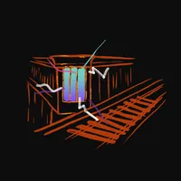
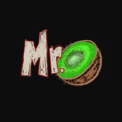
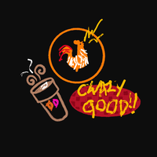
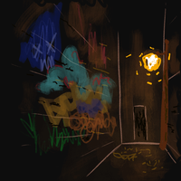
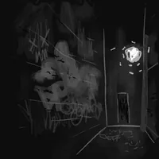
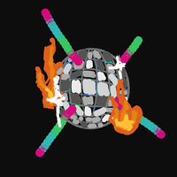
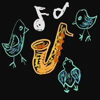
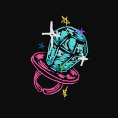
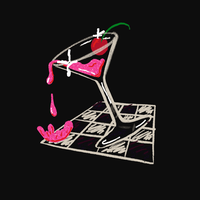
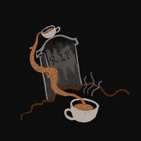

A sound piece scored for the corner of Myrtle and Broadway at night, narrated as Yelp reviews by the rats who live there. Click any pin on the map to read a review and hear it spoken in rat vocalizations, some slowed from ultrasound into human hearing range.









